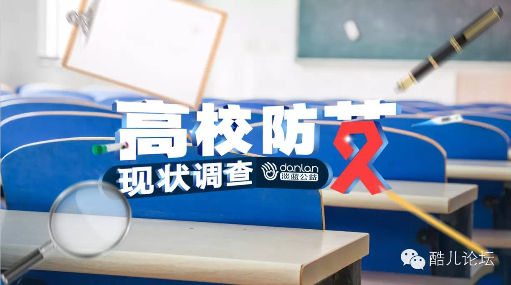

青春零艾滋|浙江大学世界艾滋病日宣传讲座与“艾滋徒步”项目负责人“流逝”报告分享会
12月1日世界艾滋病日宣传讲座于晚上7点开始，在浙江大学紫金港校区医学院辅楼报告厅隆重举行。本次组织策划的相关单位包括浙江大学红十字会，酷儿论坛，杭州疾病预防与控制中心。同时杭州著名的LGBT公益组织向阳花开，亦有相关成员到场参与。
“艾滋病离我们并不遥远，有时近在身边。”这是很多防艾滋病工作者经常提醒公众的一句话。在艾滋病感染者数字不断攀升的当下，如何做到感染者零歧视、志愿者零误解、中小学生与相关知识零距离，值得关注。
今年浙江省艾滋病疫情主要有两个特征：一，艾滋病报告人数虽然呈现上升趋势，但是增速有所趋缓，二是性传播仍然是主要传播途径，更值得注意的是，男男同性传播已经呈现高流行水平。
随着艾滋病传播方式的年轻化，低龄化，有调查显示，目前，各高校已成为艾滋病的多发地带，高校是防艾的一个重要阵地。因此，浙江省卫计委，浙江省教育厅，浙江省疾病控制预防中心等单位，将今年2015年浙江省艾滋病疫情情况，安排在浙江高校进行发布。

从历史观的角度来看艾滋防治的工作，流逝作为一名感染者，他的体会有着特殊的味道。以去年著名的描绘上世纪80年代同志艾滋病携带者的生活的电影《平常心》中所提及的那样，在80年代背景之下，首批艾滋病人开始浮现，里根总统曾因为直到艾滋病出现四年后才正视它而给整个美国留下伤痛和败笔。而后的一系列针对艾滋病的医学探索和药物研发，逐渐让感染者的生存几率得到了显著提升。从目前中国的形势来看，正确的药物治疗可以大大大提升感染者的寿命，良好条件下能够达到20-30年。相信随着医疗技术的进一步提升，这个数字会走得更远。
此外，流逝特别向大家介绍了其参加美国GG9（Gay Games）同性恋运动会的故事。神奇地作为中国代表团唯一的参赛选手，流逝拿到50米游泳的银牌，成为当届唯一的夺牌中国选手。在西方对同性恋群体更为开放包容的今天，有越来越多的机会值得国内外的公益组织借此发声，走到更广阔的视野中去。
在讲座的过程当中，现场还播放了来自酷儿论坛拍摄的校园调查视频，来看看同学们对于世界艾滋病日有着什么样的认识吧~
同学你知道12月1日是什么日子么？你知道艾滋病的传播途径么？“同性恋等于艾滋病”这个你怎么看？如果你的室友/喜欢的人感染了你会？
坛